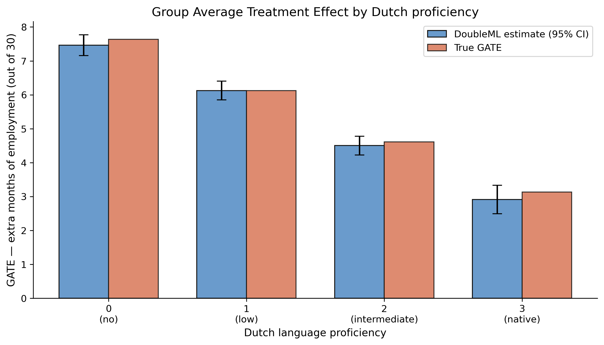
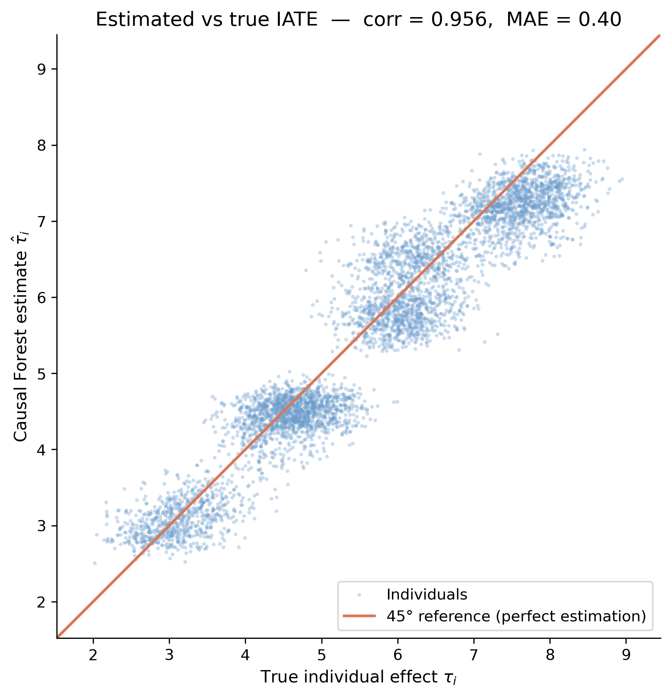
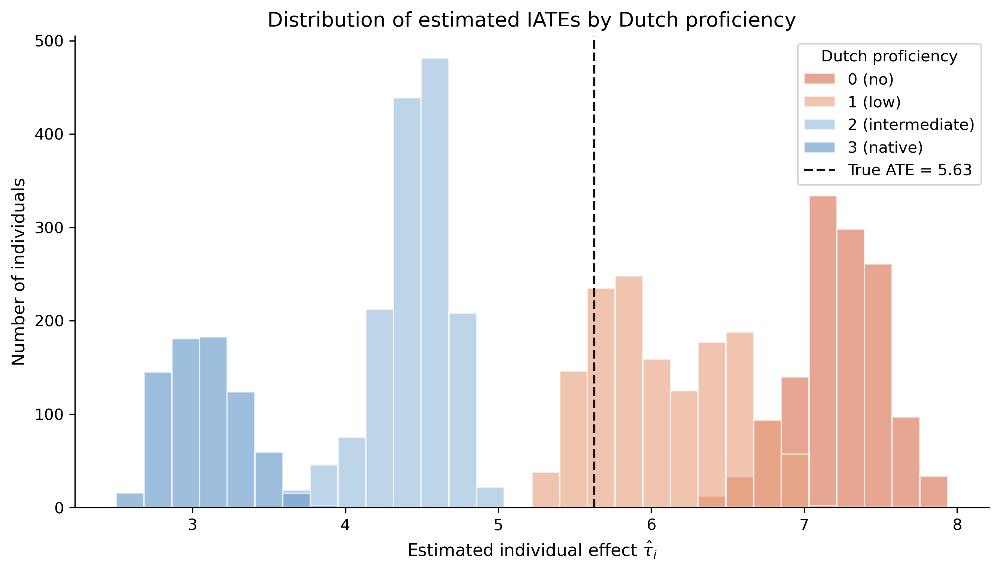
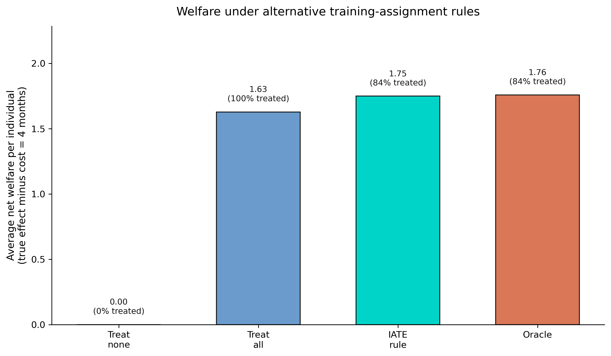

Population average → subgroup average → one number per person. Earn the coarse estimand before the fine one — the order is the discipline.
The identifying assumption: unconfoundedness, not randomisation
The data are observational. We assume selection-on-observables: conditional on \(X\), treatment is as good as random.
\[D \perp \{Y(1), Y(0)\} \mid X\]
This is the strong assumption that licenses everything downstream. The naive difference-in-means is therefore genuinely biased here — not merely imprecise.
The lab: 5,000 jobseekers, six covariates, and a known ground truth
Outcome\(Y\) — months employed over a 30-month follow-up (mean 22.7)
Treatment\(D\) — received training (52.8% treated)
Outcome regression \(g_d(X) = E[Y \mid D=d, X]\) plus an inverse-propensity residual correction. \(E[\psi_i] = \text{ATE}\) if either\(g\) or \(m\) is right — the “double” in doubly robust.
Six lines of DoubleML, with random-forest nuisances and 5-fold cross-fitting
dml_data = DoubleMLData(df, y_col="Y", d_cols="D", x_cols=X_COLS)ml_g = RandomForestRegressor(n_estimators=200, min_samples_leaf=5)ml_m = RandomForestClassifier(n_estimators=200, min_samples_leaf=5)dml_irm = DoubleMLIRM( dml_data, ml_g=ml_g, ml_m=ml_m, n_folds=5, score="ATE", trimming_threshold=0.01,)dml_irm.fit(store_predictions=True) # coef[0] is the ATE
DoubleML closes 79% of the bias and its CI now covers the truth
5.520
DoubleML ATE [5.36, 5.68] · covers the true 5.628 · bias cut from −0.52 to −0.11; SE 0.094 → 0.081
The effect is not flat: GATE falls from 7.5 to 2.9 as Dutch proficiency rises

Estimated GATE (steel) vs true GATE (orange) by Dutch proficiency; both decline monotonically and nearly coincide.
The causal forest goes one level deeper: one effect estimate per person

Estimated IATE vs true individual effect \(\tau\) for 5,000 jobseekers, with a 45° line; points cluster tightly on the diagonal.
Individual effects shift left with proficiency — heterogeneity, person by person

Estimated IATEs coloured by Dutch proficiency; a dashed line marks the true ATE of 5.63. Distributions shift monotonically left as proficiency rises.
Right tool, right job: DoubleML for the ATE, the forest for ranking
DoubleML (IRM)
targets the population ATE directly
CI [5.36, 5.68] covers truth
doubly robust, \(\sqrt{n}\) rate
use for “what is the ATE?”
CausalForestDML
one IATE per person, corr 0.956
mean-of-IATEs CI [5.42, 5.50] misses truth
ranks individuals, finds heterogeneity
use for “for whom?”
The Resolution
Act III
Welfare is the per-person sum of treated effects net of cost
For everyone the rule treats, add their true effect minus the cost \(c = 4\) months. Treat-all leaves welfare on the table; targeting the responders does better.
A simple IATE rule recovers 99.5% of oracle welfare
1.749
Welfare/person under the IATE rule vs oracle 1.758 (99.5%) and treat-all 1.628 (+7.4%); treats 83.9% vs the oracle’s 83.8%
The payoff in one panel: targeting beats treating everyone

Average net welfare per person under four rules; the IATE rule (1.749) nearly matches the oracle (1.758) and beats treat-all (1.628).
Does LASSO-style flexibility make this causal? No — the assumption still carries it
Objection. A flexible forest that picks its own controls must be “more causal” than a naive comparison.
Response. Flexibility helps estimation, not identification. \(\tau\) is identified only under unconfoundedness and overlap; the forest just estimates it well given those. On a real cohort with thin overlap, the favourable performance here would not transfer for free.
Estimate the average, learn the individual, then assign by who benefits.